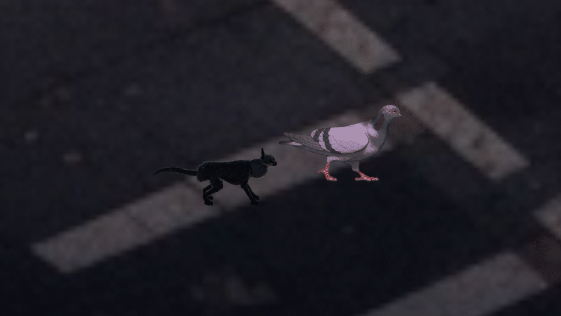
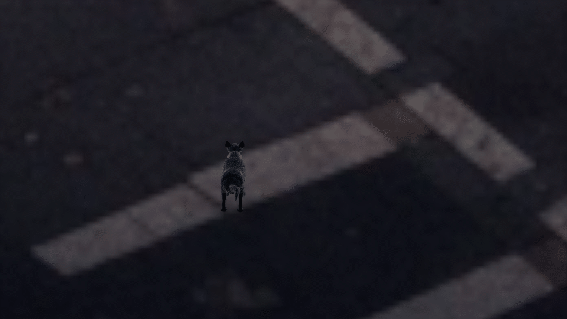

The pounce
Crouch → lift → contact → landing
Stepping left and right turns, followed by a crouch, spring and landing on the pigeon. These loops show the actual cat animation against the saved street background.

Crouch → lift → contact → landing
Paws step before forward travel resumes.

The opposite paw leads the stepping cycle.
Loops play automatically, with a short pause at the end. View still frames.